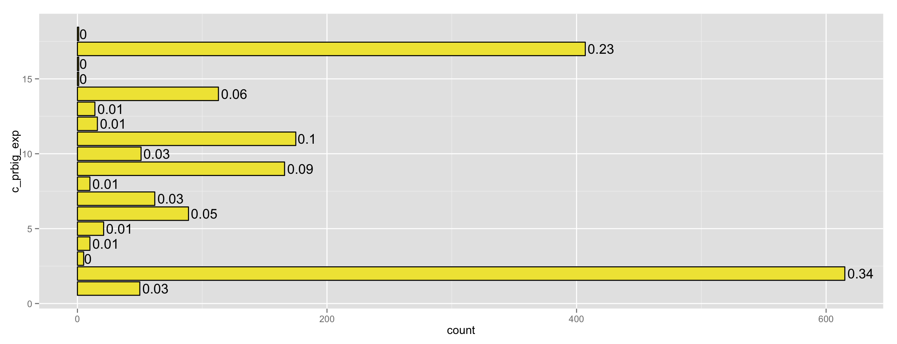
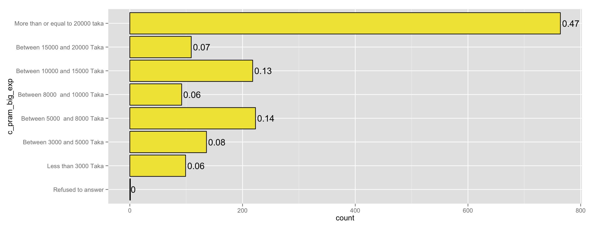
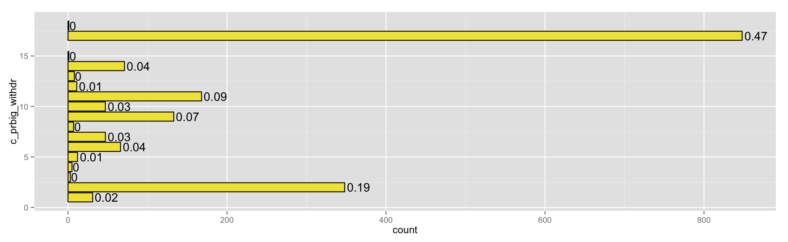
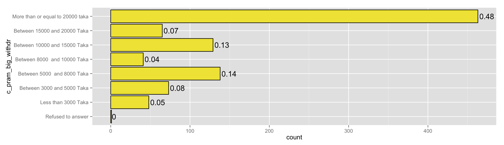

biggest expense
in the last 2 years, what was the single biggest expense you have had to make at one time? 
amount: 
##
## Refused to answer None
## 1 0
## Less than 3000 Taka Between 3000 and 5000 Taka
## 91 121
## Between 5000 and 8000 Taka Between 8000 and 10000 Taka
## 193 79
## Between 10000 and 15000 Taka Between 15000 and 20000 Taka
## 187 94
## More than or equal to 20000 taka Don't know
## 633 0
## <NA>
## 1639
biggest withdrawl
what is the biggest withdrawal from your savings/money put away that you have made at one time over the last 2 years? 
amount: 
##
## Refused to answer None
## 1 0
## Less than 3000 Taka Between 3000 and 5000 Taka
## 48 73
## Between 5000 and 8000 Taka Between 8000 and 10000 Taka
## 138 41
## Between 10000 and 15000 Taka Between 15000 and 20000 Taka
## 129 65
## More than or equal to 20000 taka Don't know
## 463 0
## <NA>
## 2080
hypothetical
if you were given 15,000 Taka today, for what purposes would you use this money?
# yo <- melt(baseline, id=c("resp_id", "c_pr2given_money1","c_pr2given_money2", "c_pr2given_money3"))
table(baseline$c_pr2given_money1, useNA = 'ifany')
##
## 1 2 3 4 5 6 7 8 9 10 11 12 13 14 15
## 22 34 15 43 14 64 79 4 85 619 206 117 24 16 368
## 16 17 18 99 <NA>
## 82 12 2 1 1231
table(baseline$c_pr2given_money2, useNA = 'ifany')
##
## 2 4 5 6 7 8 9 10 11 12 13 14 15 16 17
## 3 19 2 22 9 1 4 17 8 34 8 5 55 9 1
## 18 <NA>
## 1 2840
table(baseline$c_pr2given_money3, useNA = 'ifany')
##
## Refused to answer
## 0
## Education related costs
## 0
## Health related costs
## 0
## Rent
## 0
## Food or Bills such as gas, electricity, water
## 0
## Enjoyment and personal expenditures including transport to visit friends and family, phone credit for chatting with friends and family, entertainment, ect
## 1
## Clothes, shoes, jewelery
## 5
## Household assets (fan, refrigerator, mattress,furniture)
## 2
## Vehicle purchase, maintenance and repair
## 0
## Home construction, improvement, renovation
## 1
## Investment to make money (e.g. investment in agriculture, business, buying things to re-sell)
## 2
## Investment to buy land or house
## 2
## Pay off loan or settle debt
## 4
## Gifts for another person or organization (including donations to mosques, temples, presents for family, religious festivals)
## 3
## Weddings, funerals, religious functions
## 1
## Saving for emergencies
## 17
## Saving for an investment in physical assets or education
## 7
## None
## 0
## Don't know
## 0
## <NA>
## 2993
back to table of contents